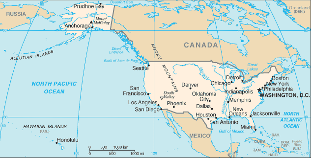
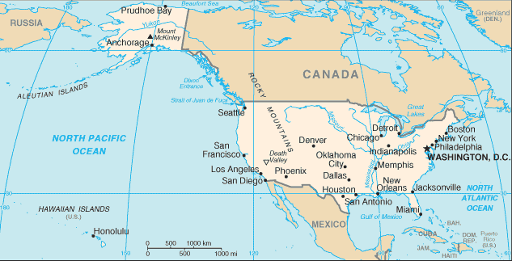

North America :: UNITED STATES
Introduction :: UNITED STATES
-
Britain's American colonies broke with the mother country in 1776 and were recognized as the new nation of the United States of America following the Treaty of Paris in 1783. During the 19th and 20th centuries, 37 new states were added to the original 13 as the nation expanded across the North American continent and acquired a number of overseas possessions. The two most traumatic experiences in the nation's history were the Civil War (1861-65), in which a northern Union of states defeated a secessionist Confederacy of 11 southern slave states, and the Great Depression of the 1930s, an economic downturn during which about a quarter of the labor force lost its jobs. Buoyed by victories in World Wars I and II and the end of the Cold War in 1991, the US remains the world's most powerful nation state. Since the end of World War II, the economy has achieved relatively steady growth, low unemployment and inflation, and rapid advances in technology.
Geography :: UNITED STATES
-
North America, bordering both the North Atlantic Ocean and the North Pacific Ocean, between Canada and Mexico38 00 N, 97 00 WNorth Americatotal: 9,833,517 sq kmland: 9,147,593 sq kmwater: 685,924 sq kmnote: includes only the 50 states and District of Columbia, no overseas territories (2010)country comparison to the world: 4about half the size of Russia; about three-tenths the size of Africa; about half the size of South America (or slightly larger than Brazil); slightly larger than China; more than twice the size of the European Uniontotal: 12,048 kmborder countries (2): Canada 8,893 km (including 2,477 km with Alaska), Mexico 3,155 kmnote: US Naval Base at Guantanamo Bay, Cuba is leased by the US and is part of Cuba; the base boundary is 28.5 km19,924 kmterritorial sea: 12 nmcontiguous zone: 24 nmexclusive economic zone: 200 nmcontinental shelf: not specifiedmostly temperate, but tropical in Hawaii and Florida, arctic in Alaska, semiarid in the great plains west of the Mississippi River, and arid in the Great Basin of the southwest; low winter temperatures in the northwest are ameliorated occasionally in January and February by warm chinook winds from the eastern slopes of the Rocky Mountainsvast central plain, mountains in west, hills and low mountains in east; rugged mountains and broad river valleys in Alaska; rugged, volcanic topography in Hawaiimean elevation: 760 melevation extremes: lowest point: Death Valley -86 m (lowest point in North America)highest point: Denali (Mount McKinley) 6,190 m (highest point in North America)note: the peak of Mauna Kea (4,205 m above sea level) on the island of Hawaii rises about 10,200 m above the Pacific Ocean floor; by this measurement, it is the world's tallest mountain - higher than Mount Everest (8,850 m), which is recognized as the tallest mountain above sea levelcoal, copper, lead, molybdenum, phosphates, rare earth elements, uranium, bauxite, gold, iron, mercury, nickel, potash, silver, tungsten, zinc, petroleum, natural gas, timber, arable landnote: the US has the world's largest coal reserves with 491 billion short tons accounting for 27% of the world's totalagricultural land: 44.5%arable land 16.8%; permanent crops 0.3%; permanent pasture 27.4%forest: 33.3%other: 22.2% (2011 est.)264,000 sq km (2012)large urban clusters are spread throughout the eastern half of the US (particularly the Great Lakes area, northeast, east, and southeast) and the western tier states; mountainous areas, principally the Rocky Mountains and Appalachian chain, deserts in the southwest, the dense boreal forests in the extreme north, and the central prairie states are less densely populated; Alaska's population is concentrated along its southern coast - with particular emphasis on the city of Anchorage - and Hawaii's is centered on the island of Oahutsunamis; volcanoes; earthquake activity around Pacific Basin; hurricanes along the Atlantic and Gulf of Mexico coasts; tornadoes in the Midwest and Southeast; mud slides in California; forest fires in the west; flooding; permafrost in northern Alaska, a major impediment to developmentvolcanism: volcanic activity in the Hawaiian Islands, Western Alaska, the Pacific Northwest, and in the Northern Mariana Islands; both Mauna Loa (4,170 m) in Hawaii and Mount Rainier (4,392 m) in Washington have been deemed Decade Volcanoes by the International Association of Volcanology and Chemistry of the Earth's Interior, worthy of study due to their explosive history and close proximity to human populations; Pavlof (2,519 m) is the most active volcano in Alaska's Aleutian Arc and poses a significant threat to air travel since the area constitutes a major flight path between North America and East Asia; St. Helens (2,549 m), famous for the devastating 1980 eruption, remains active today; numerous other historically active volcanoes exist, mostly concentrated in the Aleutian arc and Hawaii; they include: in Alaska: Aniakchak, Augustine, Chiginagak, Fourpeaked, Iliamna, Katmai, Kupreanof, Martin, Novarupta, Redoubt, Spurr, Wrangell; in Hawaii: Trident, Ugashik-Peulik, Ukinrek Maars, Veniaminof; in the Northern Mariana Islands: Anatahan; and in the Pacific Northwest: Mount Baker, Mount Hoodlarge emitter of carbon dioxide from the burning of fossil fuels; air pollution resulting in acid rain in both the US and Canada; water pollution from runoff of pesticides and fertilizers; limited natural freshwater resources in much of the western part of the country require careful management; desertificationparty to: Air Pollution, Air Pollution-Nitrogen Oxides, Antarctic-Environmental Protocol, Antarctic-Marine Living Resources, Antarctic Seals, Antarctic Treaty, Climate Change, Desertification, Endangered Species, Environmental Modification, Marine Dumping, Marine Life Conservation, Ozone Layer Protection, Ship Pollution, Tropical Timber 83, Tropical Timber 94, Wetlands, Whalingsigned, but not ratified: Air Pollution-Persistent Organic Pollutants, Air Pollution-Volatile Organic Compounds, Biodiversity, Climate Change-Kyoto Protocol, Hazardous Wastesworld's third-largest country by size (after Russia and Canada) and by population (after China and India); Denali (Mt. McKinley) is the highest point in North America and Death Valley the lowest point on the continent
People and Society :: UNITED STATES
-
326,625,791 (July 2017 est.)country comparison to the world: 3noun: American(s)adjective: Americanwhite 72.4%, black 12.6%, Asian 4.8%, Amerindian and Alaska native 0.9%, native Hawaiian and other Pacific islander 0.2%, other 6.2%, two or more races 2.9% (2010 estimate)note: a separate listing for Hispanic is not included because the US Census Bureau considers Hispanic to mean persons of Spanish/Hispanic/Latino origin including those of Mexican, Cuban, Puerto Rican, Dominican Republic, Spanish, and Central or South American origin living in the US who may be of any race or ethnic group (white, black, Asian, etc.); an estimated 16.3% of the total US population is Hispanic as of 2010English 79%, Spanish 13%, other Indo-European 3.7%, Asian and Pacific island 3.4%, other 1% (2015 est.)note: data represent the language spoken at home; the US has no official national language, but English has acquired official status in 32 of the 50 states; Hawaiian is an official language in the state of Hawaii, and 20 indigenous languages are official in AlaskaProtestant 46.5%, Roman Catholic 20.8%, Jewish 1.9%, Mormon 1.6%, other Christian 0.9%, Muslim 0.9%, Jehovah's Witness 0.8%, Buddhist 0.7%, Hindu 0.7%, other 1.8%, unaffiliated 22.8%, don't know/refused 0.6% (2014 est.)0-14 years: 18.73% (male 31,255,995/female 29,919,938)15-24 years: 13.27% (male 22,213,952/female 21,137,826)25-54 years: 39.45% (male 64,528,673/female 64,334,499)55-64 years: 12.91% (male 20,357,880/female 21,821,976)65 years and over: 15.63% (male 22,678,235/female 28,376,817) (2017 est.)total dependency ratio: 51.2youth dependency ratio: 29elderly dependency ratio: 22.1potential support ratio: 4.5 (2015 est.)total: 38.1 yearsmale: 36.8 yearsfemale: 39.4 years (2017 est.)country comparison to the world: 620.81% (2017 est.)country comparison to the world: 13612.5 births/1,000 population (2017 est.)country comparison to the world: 1588.2 deaths/1,000 population (2017 est.)country comparison to the world: 853.9 migrant(s)/1,000 population (2017 est.)country comparison to the world: 31large urban clusters are spread throughout the eastern half of the US (particularly the Great Lakes area, northeast, east, and southeast) and the western tier states; mountainous areas, principally the Rocky Mountains and Appalachian chain, deserts in the southwest, the dense boreal forests in the extreme north, and the central prarie states are less densely populated; Alaska's population is concentrated along its southern coast - with particular emphasis on the city of Anchorage - and Hawaii's is centered on the island of Oahuurban population: 82% of total population (2017)rate of urbanization: 0.99% annual rate of change (2015-20 est.)New York-Newark 18.593 million; Los Angeles-Long Beach-Santa Ana 12.31 million; Chicago 8.745 million; Miami 5.817 million; Dallas-Fort Worth 5.703 million; WASHINGTON, D.C. (capital) 4.955 million (2015)at birth: NA0-14 years: 1.04 male(s)/female15-24 years: 1.05 male(s)/female25-54 years: 1 male(s)/female55-64 years: 0.93 male(s)/female65 years and over: 0.79 male(s)/femaletotal population: 0.97 male(s)/female (2016 est.)26.4 years (2015 est.)14 deaths/100,000 live births (2015 est.)country comparison to the world: 138total: 5.8 deaths/1,000 live birthsmale: 6.3 deaths/1,000 live birthsfemale: 5.3 deaths/1,000 live births (2017 est.)country comparison to the world: 170total population: 80 yearsmale: 77.7 yearsfemale: 82.2 years (2017 est.)country comparison to the world: 431.87 children born/woman (2017 est.)country comparison to the world: 14374.1%note: percent of women aged 15-44 (2011/13)17.1% of GDP (2014)country comparison to the world: 12.55 physicians/1,000 population (2013)2.9 beds/1,000 population (2011)improved:urban: 99.4% of populationrural: 98.2% of populationtotal: 99.2% of populationunimproved:urban: 0.6% of populationrural: 1.8% of populationtotal: 0.8% of population (2015 est.)improved:urban: 100% of populationrural: 100% of populationtotal: 100% of populationunimproved:urban: 0% of populationrural: 0% of populationtotal: 0% of population (2015 est.)NANANA36.2% (2016)country comparison to the world: 120.5% (2012)country comparison to the world: 1364.9% of GDP (2013)country comparison to the world: 63total: 17 yearsmale: 16 yearsfemale: 17 years (2014)total: 10.4%male: 11.4%female: 9.3% (2016 est.)country comparison to the world: 68
Government :: UNITED STATES
-
conventional long form: United States of Americaconventional short form: United Statesabbreviation: US or USAetymology: the name America is derived from that of Amerigo VESPUCCI (1454-1512) - Italian explorer, navigator, and cartographer - using the Latin form of his name, Americus, feminized to Americaconstitutional federal republicname: Washington, DCgeographic coordinates: 38 53 N, 77 02 Wtime difference: UTC-5 (during Standard Time)daylight saving time: +1hr, begins second Sunday in March; ends first Sunday in Novembernote: the 50 United States cover six time zones50 states and 1 district*; Alabama, Alaska, Arizona, Arkansas, California, Colorado, Connecticut, Delaware, District of Columbia*, Florida, Georgia, Hawaii, Idaho, Illinois, Indiana, Iowa, Kansas, Kentucky, Louisiana, Maine, Maryland, Massachusetts, Michigan, Minnesota, Mississippi, Missouri, Montana, Nebraska, Nevada, New Hampshire, New Jersey, New Mexico, New York, North Carolina, North Dakota, Ohio, Oklahoma, Oregon, Pennsylvania, Rhode Island, South Carolina, South Dakota, Tennessee, Texas, Utah, Vermont, Virginia, Washington, West Virginia, Wisconsin, WyomingAmerican Samoa, Baker Island, Guam, Howland Island, Jarvis Island, Johnston Atoll, Kingman Reef, Midway Islands, Navassa Island, Northern Mariana Islands, Palmyra Atoll, Puerto Rico, Virgin Islands, Wake Islandnote: from 18 July 1947 until 1 October 1994, the US administered the Trust Territory of the Pacific Islands; it entered into a political relationship with all four political entities: the Northern Mariana Islands is a commonwealth in political union with the US (effective 3 November 1986); the Republic of the Marshall Islands signed a Compact of Free Association with the US (effective 21 October 1986); the Federated States of Micronesia signed a Compact of Free Association with the US (effective 3 November 1986); Palau concluded a Compact of Free Association with the US (effective 1 October 1994)4 July 1776 (declared independence from Great Britain); 3 September 1783 (recognized by Great Britain)Independence Day, 4 July (1776)previous 1781 (Articles of Confederation and Perpetual Union); latest drafted July - September 1787, submitted to the Congress of the Confederation 20 September 1787, submitted for states' ratification 28 September 1787, ratification completed by nine states 21 June 1788, effective 4 March 1789; amended many times, last in 1992 (2016)common law system based on English common law at the federal level; state legal systems based on common law except Louisiana, which is based on Napoleonic civil code; judicial review of legislative actswithdrew acceptance of compulsory ICJ jurisdiction in 2005; withdrew acceptance of ICCt jurisdiction in 2002citizenship by birth: yescitizenship by descent: yesdual citizenship recognized: no, but the US government acknowledges such situtations exist; US citizens are not encouraged to seek dual citizenship since it limits protection by the USresidency requirement for naturalization: 5 years18 years of age; universalchief of state: President Donald J. TRUMP (since 20 January 2017); Vice President Michael R. PENCE (since 20 January 2017); note - the president is both chief of state and head of governmenthead of government: President Donald J. TRUMP (since 20 January 2017); Vice President Michael R. PENCE (since 20 January 2017)cabinet: Cabinet appointed by the president, approved by the Senateelections/appointments: president and vice president indirectly elected on the same ballot by the Electoral College of 'electors' chosen from each state; president and vice president serve a 4-year term (eligible for a second term); election last held on 8 November 2016 (next to be held on 10 November 2020)election results: Donald J. TRUMP elected president; electoral vote - Donald J. TRUMP (Republican Party) 304, Hillary D. CLINTON (Democratic Party) 227, other 7; percent of direct popular vote - Hillary D. CLINTON 48.2%, Donald J. TRUMP 46.1%, other 5.7%description: bicameral Congress consists of the Senate (100 seats; 2 members directly elected in each of the 50 state constituencies by simple majority vote except in Georgia and Louisiana which require an absolute majority vote with a second round if needed; members serve 6-year terms with one-third of membership renewed every 2 years) and the House of Representatives (435 seats; members directly elected in single-seat constituencies by simple majority vote except in Georgia which requires an absolute majority vote with a second round if needed; members serve 2-year terms)elections: Senate - last held on 8 November 2016 (next to be held on 6 November 2018); House of Representatives - last held on 8 November 2016 (next to be held on 6 November 2018)election results: Senate - percent of vote by party - NA; seats by party - Republican Party 24, Democratic Party 10; House of Representatives - percent of vote by party - NA; seats by party - Republican Party 241, Democratic Party 194,note: in addition to the regular members of the House of Representatives there are 6 non-voting delegates elected from the District of Columbia and the US territories of American Samoa, Guam, Puerto Rico, the Northern Mariana Islands, and the Virgin Islands; these are single seat constituencies directly elected by simple majority vote to serve a 2-year term (except for the resident commissioner of Puerto Rico who serves a 4-year term); the delegate can vote when serving on a committee and when the House meets as the Committee of the Whole House, but not when legislation is submitted for a “full floor” House vote; election of delegates last held on 8 November 2016 (next to be held on 6 November 2018)highest court(s): US Supreme Court (consists of 9 justices - the chief justice and 8 associate justices)judge selection and term of office: president nominates and, with the advice and consent of the Senate, appoints Supreme Court justices; justices appointed for lifesubordinate courts: Courts of Appeal (includes the US Court of Appeal for the Federal District and 12 regional appeals courts); 94 federal district courts in 50 states and territoriesnote: the US court system consists of the federal court system and the state court systems; although each court system is responsible for hearing certain types of cases, neither is completely independent of the other, and the systems often interactDemocratic Party [Tom PEREZ]Green Party [collective leadership]Libertarian Party [Nicholas SARWARK]Republican Party [Ronna Romney MCDANIEL]environmentalists; business groups; labor unions; churches; ethnic groups; political action committees or PACs; health groups; education groups; civic groups; youth groups; transportation groups; agricultural groups; veterans groups; women's groups; reform lobbiesADB (nonregional member), AfDB (nonregional member), ANZUS, APEC, Arctic Council, ARF, ASEAN (dialogue partner), Australia Group, BIS, BSEC (observer), CBSS (observer), CD, CE (observer), CERN (observer), CICA (observer), CP, EAPC, EAS, EBRD, EITI (implementing country), FAO, FATF, G-5, G-7, G-8, G-10, G-20, IADB, IAEA, IBRD, ICAO, ICC (national committees), ICRM, IDA, IEA, IFAD, IFC, IFRCS, IGAD (partners), IHO, ILO, IMF, IMO, IMSO, Interpol, IOC, IOM, ISO, ITSO, ITU, ITUC (NGOs), MIGA, MINUSMA, MINUSTAH, MONUSCO, NAFTA, NATO, NEA, NSG, OAS, OECD, OPCW, OSCE, Pacific Alliance (observer), Paris Club, PCA, PIF (partner), SAARC (observer), SELEC (observer), SICA (observer), SPC, UN, UNCTAD, UNESCO, UNHCR, UNITAR, UNMIL, UNMISS, UNRWA, UNSC (permanent), UNTSO, UPU, WCO, WHO, WIPO, WMO, WTO, ZC13 equal horizontal stripes of red (top and bottom) alternating with white; there is a blue rectangle in the upper hoist-side corner bearing 50 small, white, five-pointed stars arranged in nine offset horizontal rows of six stars (top and bottom) alternating with rows of five stars; the 50 stars represent the 50 states, the 13 stripes represent the 13 original colonies; the blue stands for loyalty, devotion, truth, justice, and friendship; red symbolizes courage, zeal, and fervency, while white denotes purity and rectitude of conduct; commonly referred to by its nickname of Old Glorynote: the design and colors have been the basis for a number of other flags, including Chile, Liberia, Malaysia, and Puerto Ricobald eagle; national colors: red, white, bluename: "The Star-Spangled Banner"lyrics/music: Francis Scott KEY/John Stafford SMITHnote: adopted 1931; during the War of 1812, after witnessing the successful American defense of Fort McHenry in Baltimore following British naval bombardment, Francis Scott KEY wrote the lyrics to what would become the national anthem; the lyrics were set to the tune of "The Anacreontic Song"; only the first verse is sung
Economy :: UNITED STATES
-
The US has the most technologically powerful economy in the world, with a per capita GDP of $57,300. US firms are at or near the forefront in technological advances, especially in computers, pharmaceuticals, and medical, aerospace, and military equipment; however, their advantage has narrowed since the end of World War II. Based on a comparison of GDP measured at purchasing power parity conversion rates, the US economy in 2014, having stood as the largest in the world for more than a century, slipped into second place behind China, which has more than tripled the US growth rate for each year of the past four decades.In the US, private individuals and business firms make most of the decisions, and the federal and state governments buy needed goods and services predominantly in the private marketplace. US business firms enjoy greater flexibility than their counterparts in Western Europe and Japan in decisions to expand capital plant, to lay off surplus workers, and to develop new products. At the same time, businesses face higher barriers to enter their rivals' home markets than foreign firms face entering US markets.Long-term problems for the US include stagnation of wages for lower-income families, inadequate investment in deteriorating infrastructure, rapidly rising medical and pension costs of an aging population, energy shortages, and sizable current account and budget deficits.The onrush of technology has been a driving factor in the gradual development of a "two-tier" labor market in which those at the bottom lack the education and the professional/technical skills of those at the top and, more and more, fail to get comparable pay raises, health insurance coverage, and other benefits. But the globalization of trade, and especially the rise of low-wage producers such as China, has put additional downward pressure on wages and upward pressure on the return to capital. Since 1975, practically all the gains in household income have gone to the top 20% of households. Since 1996, dividends and capital gains have grown faster than wages or any other category of after-tax income.Imported oil accounts for nearly 55% of US consumption and oil has a major impact on the overall health of the economy. Crude oil prices doubled between 2001 and 2006, the year home prices peaked; higher gasoline prices ate into consumers' budgets and many individuals fell behind in their mortgage payments. Oil prices climbed another 50% between 2006 and 2008, and bank foreclosures more than doubled in the same period. Besides dampening the housing market, soaring oil prices caused a drop in the value of the dollar and a deterioration in the US merchandise trade deficit, which peaked at $840 billion in 2008. Because the US economy is energy-intensive, falling oil prices since 2013 have alleviated many of the problems the earlier increases had created.The sub-prime mortgage crisis, falling home prices, investment bank failures, tight credit, and the global economic downturn pushed the US into a recession by mid-2008. GDP contracted until the third quarter of 2009, making this the deepest and longest downturn since the Great Depression. To help stabilize financial markets, the US Congress established a $700 billion Troubled Asset Relief Program (TARP) in October 2008. The government used some of these funds to purchase equity in US banks and industrial corporations, much of which had been returned to the government by early 2011. In January 2009, Congress passed and President Barack OBAMA signed a bill providing an additional $787 billion fiscal stimulus to be used over 10 years - two-thirds on additional spending and one-third on tax cuts - to create jobs and to help the economy recover. In 2010 and 2011, the federal budget deficit reached nearly 9% of GDP. In 2012, the Federal Government reduced the growth of spending and the deficit shrank to 7.6% of GDP. US revenues from taxes and other sources are lower, as a percentage of GDP, than those of most other countries.Wars in Iraq and Afghanistan required major shifts in national resources from civilian to military purposes and contributed to the growth of the budget deficit and public debt. Through 2014, the direct costs of the wars totaled more than $1.5 trillion, according to US Government figures.In March 2010, President OBAMA signed into law the Patient Protection and Affordable Care Act, a health insurance reform that was designed to extend coverage to an additional 32 million Americans by 2016, through private health insurance for the general population and Medicaid for the impoverished. Total spending on healthcare - public plus private - rose from 9.0% of GDP in 1980 to 17.9% in 2010.In July 2010, the president signed the DODD-FRANK Wall Street Reform and Consumer Protection Act, a law designed to promote financial stability by protecting consumers from financial abuses, ending taxpayer bailouts of financial firms, dealing with troubled banks that are "too big to fail," and improving accountability and transparency in the financial system - in particular, by requiring certain financial derivatives to be traded in markets that are subject to government regulation and oversight.In December 2012, the Federal Reserve Board (Fed) announced plans to purchase $85 billion per month of mortgage-backed and Treasury securities in an effort to hold down long-term interest rates, and to keep short-term rates near zero until unemployment dropped below 6.5% or inflation rose above 2.5%. In late 2013, the Fed announced that it would begin scaling back long-term bond purchases to $75 billion per month in January 2014 and further reduce them as conditions warranted; the Fed ended the purchases during the summer of 2014. In 2014, the unemployment rate dropped to 6.2%, and continued to fall to 5.5% by mid-2015, the lowest rate of joblessness since before the global recession began; inflation stood at 1.7%, and public debt as a share of GDP continued to decline, following several years of increases. In December 2015, the Fed raised its target for the benchmark federal funds rate by 0.25%, the first increase since the recession began. With US GDP growth below 2%, the Fed has opted to raise rates three times since then, and in mid-June 2017, the range for the target rate stood at 1% to 1.25%.$18.62 trillion (2016 est.)$18.12 trillion (2015 est.)$17.43 trillion (2014 est.)note: data are in 2016 dollarscountry comparison to the world: 3$18.62 trillion (2016 est.)1.5% (2016 est.)2.9% (2015 est.)2.6% (2014 est.)country comparison to the world: 149$57,600 (2016 est.)$57,200 (2015 est.)$56,000 (2014 est.)note: data are in 2016 dollarscountry comparison to the world: 2018% of GDP (2016 est.)19.4% of GDP (2015 est.)19.3% of GDP (2014 est.)country comparison to the world: 135household consumption: 68.8%government consumption: 17.5%investment in fixed capital: 16.2%investment in inventories: 0.2%exports of goods and services: 11.9%imports of goods and services: -14.7% (2016 est.)agriculture: 0.9%industry: 18.9%services: 80.2%(2016 est.)wheat, corn, other grains, fruits, vegetables, cotton; beef, pork, poultry, dairy products; fish; forest productshighly diversified, world leading, high-technology innovator, second-largest industrial output in the world; petroleum, steel, motor vehicles, aerospace, telecommunications, chemicals, electronics, food processing, consumer goods, lumber, mining-0.3% (2016 est.)country comparison to the world: 160159.2 millionnote: includes unemployed (2016 est.)country comparison to the world: 4farming, forestry, and fishing: 0.7%manufacturing, extraction, transportation, and crafts: 20.3%managerial, professional, and technical: 37.3%sales and office: 24.2%other services: 17.6%note: figures exclude the unemployed(2009)4.9% (2016 est.)5.3% (2015 est.)country comparison to the world: 6615.1% (2010 est.)lowest 10%: 2%highest 10%: 30% (2007 est.)45 (2007)40.8 (1997)country comparison to the world: 40revenues: $3.267 trillionexpenditures: $3.852 trillionnote: for the US, revenues exclude social contributions of approximately $1.0 trillion; expenditures exclude social benefits of approximately $2.3 trillion (2016 est.)17.6% of GDPnote: excludes contributions for social security and other programs; if social contributions were added, taxes and other revenues would amount to approximately 22% of GDP (2016 est.)country comparison to the world: 170-3.2% of GDP (2016 est.)country comparison to the world: 12376.5% of GDP (2016 est.)72.9% of GDP (2015 est.)note: data cover only what the United States Treasury denotes as "Debt Held by the Public," which includes all debt instruments issued by the Treasury that are owned by non-US Government entities; the data include Treasury debt held by foreign entities; the data exclude debt issued by individual US states, as well as intra-governmental debt; intra-governmental debt consists of Treasury borrowings from surpluses in the trusts for Federal Social Security, Federal Employees, Hospital and Supplemental Medical Insurance (Medicare), Disability and Unemployment, and several other smaller trusts; if data for intra-government debt were added, "gross debt" would increase by about one-third of GDPcountry comparison to the world: 431 October - 30 September1.3% (2016 est.)0.1% (2015 est.)country comparison to the world: 970.5% (31 December 2010)0.5% (31 December 2009)country comparison to the world: 1333.51% (31 December 2016 est.)3.26% (31 December 2015 est.)country comparison to the world: 161$3.25 trillion (31 December 2016 est.)$3.021 trillion (31 December 2015 est.)country comparison to the world: 4$13.17 trillion (31 December 2016 est.)$12.02 trillion (31 December 2015 est.)country comparison to the world: 2$20.24 trillion (31 December 2016 est.)$19.26 trillion (31 December 2015 est.)country comparison to the world: 2$25.07 trillion (31 December 2015 est.)$26.33 trillion (31 December 2014 est.)$24.03 trillion (31 December 2013 est.)country comparison to the world: 1$-451.7 billion (2016 est.)$-434.6 billion (2015 est.)country comparison to the world: 200$1.456 trillion (2016 est.)$1.511 trillion (2015 est.)country comparison to the world: 3agricultural products (soybeans, fruit, corn) 9.2%, industrial supplies (organic chemicals) 26.8%, capital goods (transistors, aircraft, motor vehicle parts, computers, telecommunications equipment) 49.0%, consumer goods (automobiles, medicines) 15.0% (2008 est.)Canada 18.3%, Mexico 15.9%, China 8%, Japan 4.4% (2016)$2.208 trillion (2016 est.)$2.273 trillion (2015 est.)country comparison to the world: 1agricultural products 4.9%, industrial supplies 32.9% (crude oil 8.2%), capital goods 30.4% (computers, telecommunications equipment, motor vehicle parts, office machines, electric power machinery), consumer goods 31.8% (automobiles, clothing, medicines, furniture, toys) (2008 est.)China 21.1%, Mexico 13.4%, Canada 12.7%, Japan 6%, Germany 5.2% (2016)$117.3 billion (31 December 2016 est.)$117.6 billion (31 December 2015 est.)country comparison to the world: 20$17.91 trillion (31 March 2016 est.)$17.85 trillion (31 March 2015 est.)note: approximately 4/5ths of US external debt is denominated in US dollars; foreign lenders have been willing to hold US dollar denominated debt instruments because they view the dollar as the world's reserve currencycountry comparison to the world: 1$3.614 trillion (31 December 2016 est.)$3.134 trillion (31 December 2015 est.)country comparison to the world: 3$5.352 trillion (31 December 2016 est.)$5.041 trillion (31 December 2015 est.)country comparison to the world: 3British pounds per US dollar: 0.7391 (2016 est.), 0.6542 (2015 est.), 0.607 (2014 est), 0.6391 (2013 est.), 0.6324 (2012 est.)Canadian dollars per US dollar: 1, 1.331 (2016 est.), 1.2788 (2015 est.), 1.1047 (2014 est.), 1.0298 (2013 est.), 0.9992 (2012 est.)Chinese yuan per US dollar: 1, 6.626 (2016 est.) 6.2275 (2015 est.), 6.1434 (2014 est.), 6.1958 (2013 est.), 6.3123 (2012 est.)euros per US dollar: 0.9214 (2016 est.), 0.885 (2015 est.), 0.7525 (2014 est.), 0.7634 (2013 est.), 0.7752 (2012 est.)Japanese yen per US dollar: 107.1 (2016 est.), 121.02 (2015 est.), 105.86 (2014 est.), 97.44 (2013 est.), 79.79 (2012 est.)
Energy :: UNITED STATES
-
electrification - total population: 100% (2016)4.088 trillion kWh (2015 est.)country comparison to the world: 23.911 trillion kWh (2015 est.)country comparison to the world: 29.695 billion kWh (2016 est.)country comparison to the world: 2580.66 billion kWh (2016 est.)country comparison to the world: 21.074 billion kW (2015 est.)country comparison to the world: 370.6% of total installed capacity (2015 est.)country comparison to the world: 1039.2% of total installed capacity (2015 est.)country comparison to the world: 187.4% of total installed capacity (2015 est.)country comparison to the world: 1240% of total installed capacity (2015 est.)country comparison to the world: 2108.853 million bbl/day (2016 est.)country comparison to the world: 3590,900 bbl/day (2016 est.)country comparison to the world: 217.85 million bbl/day (2016 est.)country comparison to the world: 136.52 billion bbl (1 January 2017 es)country comparison to the world: 1120.08 million bbl/day (2016 est.)country comparison to the world: 119.69 million bbl/day (2015 est.)country comparison to the world: 14.67 million bbl/day (2016 est.)country comparison to the world: 12.205 million bbl/day (2016 est.)country comparison to the world: 2766.2 billion cu m (2015 est.)country comparison to the world: 1773.2 billion cu m (2015 est.)country comparison to the world: 150.52 billion cu m (2015 est.)country comparison to the world: 776.96 billion cu m (2015 est.)country comparison to the world: 48.714 trillion cu m (1 January 2016 es)country comparison to the world: 45.402 billion Mt (2013 est.)country comparison to the world: 2
Communications :: UNITED STATES
-
total subscriptions: 121.53 millionsubscriptions per 100 inhabitants: 38 (July 2016 est.)country comparison to the world: 3total: 416.684 millionsubscriptions per 100 inhabitants: 129 (July 2016 est.)country comparison to the world: 5general assessment: a large, technologically advanced, multipurpose communications systemdomestic: a large system of fiber-optic cable, microwave radio relay, coaxial cable, and domestic satellites carries every form of telephone traffic; a rapidly growing cellular system carries mobile telephone traffic throughout the countryinternational: country code - 1; multiple ocean cable systems provide international connectivity; satellite earth stations - 61 Intelsat (45 Atlantic Ocean and 16 Pacific Ocean), 5 Intersputnik (Atlantic Ocean region), and 4 Inmarsat (Pacific and Atlantic Ocean regions) (2016)4 major terrestrial TV networks with affiliate stations throughout the country, plus cable and satellite networks, independent stations, and a limited public broadcasting sector that is largely supported by private grants; overall, thousands of TV stations broadcasting; multiple national radio networks with many affiliate stations; while most stations are commercial, National Public Radio (NPR) has a network of some 600 member stations; satellite radio available; overall, nearly 15,000 radio stations operating (2008).ustotal: 246,809,221percent of population: 76.2% (July 2016 est.)country comparison to the world: 3
Transportation :: UNITED STATES
-
number of registered air carriers: 92inventory of registered aircraft operated by air carriers: 6,817annual passenger traffic on registered air carriers: 798.23 millionannual freight traffic on registered air carriers: 37.219 billion mt-km (2015)N (2016)13,513 (2013)country comparison to the world: 1total: 5,054over 3,047 m: 1892,438 to 3,047 m: 2351,524 to 2,437 m: 1,478914 to 1,523 m: 2,249under 914 m: 903 (2013)total: 8,459over 3,047 m: 12,438 to 3,047 m: 61,524 to 2,437 m: 140914 to 1,523 m: 1,552under 914 m: 6,760 (2013)5,287 (2013)natural gas 1,984,321 km; petroleum products 240,711 km (2013)total: 293,564.2 kmstandard gauge: 293,564.2 km 1.435-m gauge (2014)country comparison to the world: 1total: 6,586,610 kmpaved: 4,304,715 km (includes 76,334 km of expressways)unpaved: 2,281,895 km (2012)country comparison to the world: 141,009 km (19,312 km used for commerce; Saint Lawrence Seaway of 3,769 km, including the Saint Lawrence River of 3,058 km, is shared with Canada) (2012)country comparison to the world: 5total: 393by type: barge carrier 6, bulk carrier 55, cargo 51, carrier 2, chemical tanker 30, container 84, passenger 18, passenger/cargo 56, petroleum tanker 35, refrigerated cargo 3, roll on/roll off 27, vehicle carrier 26foreign-owned: 85 (Australia 1, Bermuda 5, Denmark 31, France 4, Germany 5, Malaysia 2, Norway 17, Singapore 16, UK 4)registered in other countries: 794 (Antigua and Barbuda 7, Australia 2, Bahamas 109, Belgium 1, Bermuda 26, Canada 10, Cayman Islands 57, Comoros 2, Cyprus 5, Georgia 1, Greece 8, Honduras 1, Hong Kong 44, Indonesia 2, Ireland 2, Isle of Man 1, Italy 23, Liberia 53, Malta 34, Marshall Islands 200, Netherlands 16, Norway 10, Panama 90, Portugal 4, Saint Kitts and Nevis 1, Saint Vincent and the Grenadines 18, Singapore 36, South Korea 8, Togo 1, UK 14, Vanuatu 2, unknown 6) (2010)country comparison to the world: 27cargo ports: Baton Rouge, Corpus Christi, Hampton Roads, Houston, Long Beach, Los Angeles, New Orleans, New York, Plaquemines (LA), Tampa, Texas Citycontainer port(s) (TEUs): Hampton Roads (2,549,000), Houston (2,131,000), Long Beach (7,192,000), Los Angeles (8,160,000), New York/New Jersey (6,372,000), Oakland (2,278,000), Savannah (3,737,000), Seattle (3,531,000) (2015)cruise departure ports (passengers): Miami (2,032,000), Port Everglades (1,277,000), Port Canaveral (1,189,000), Seattle (430,000), Long Beach (415,000) (2009)oil terminal(s): LOOP terminal, Haymark terminalLNG terminal(s) (import): Cove Point (MD), Elba Island (GA), Everett (MA), Freeport (TX), Golden Pass (TX), Hackberry (LA), Lake Charles (LA), Neptune (offshore), Northeast Gateway (offshore), Pascagoula (MS), Sabine Pass (TX)LNG terminal(s) (export): Kenai (AK)
Military and Security :: UNITED STATES
-
3.29% of GDP (2016)3.3% of GDP (2015)3.51% of GDP (2014)3.83% of GDP (2013)4.24% of GDP (2012)country comparison to the world: 9United States Armed Forces: US Army, US Navy (includes Marine Corps), US Air Force, US Coast Guard; note - Coast Guard administered in peacetime by the Department of Homeland Security, but in wartime reports to the Department of the Navy (2017)18 years of age (17 years of age with parental consent) for male and female voluntary service; no conscription; maximum enlistment age 42 (Army), 27 (Air Force), 34 (Navy), 28 (Marines); 8-year service obligation, including 2-5 years active duty (Army), 2 years active (Navy), 4 years active (Air Force, Marines); all military occupations and positions open to women (2016)
Transnational Issues :: UNITED STATES
-
the US has intensified domestic security measures and is collaborating closely with its neighbors, Canada and Mexico, to monitor and control legal and illegal personnel, transport, and commodities across the international borders; abundant rainfall in recent years along much of the Mexico-US border region has ameliorated periodically strained water-sharing arrangements; 1990 Maritime Boundary Agreement in the Bering Sea still awaits Russian Duma ratification; Canada and the United States dispute how to divide the Beaufort Sea and the status of the Northwest Passage but continue to work cooperatively to survey the Arctic continental shelf; The Bahamas and US have not been able to agree on a maritime boundary; US Naval Base at Guantanamo Bay is leased from Cuba and only mutual agreement or US abandonment of the area can terminate the lease; Haiti claims US-administered Navassa Island; US has made no territorial claim in Antarctica (but has reserved the right to do so) and does not recognize the claims of any other states; Marshall Islands claims Wake Island; Tokelau included American Samoa's Swains Island among the islands listed in its 2006 draft constitutionrefugees (country of origin): the US admitted 84,994 refugees during FY2016 including: 16,370 (Democratic Republic of the Congo); 12,587 (Syria); 12,347 (Burma); 9,880 (Iraq); 9,020 (Somalia); 5,817 (Bhutan); 3,750 (Iran)world's largest consumer of cocaine (shipped from Colombia through Mexico and the Caribbean), Colombian heroin, and Mexican heroin and marijuana; major consumer of ecstasy and Mexican methamphetamine; minor consumer of high-quality Southeast Asian heroin; illicit producer of cannabis, marijuana, depressants, stimulants, hallucinogens, and methamphetamine; money-laundering center